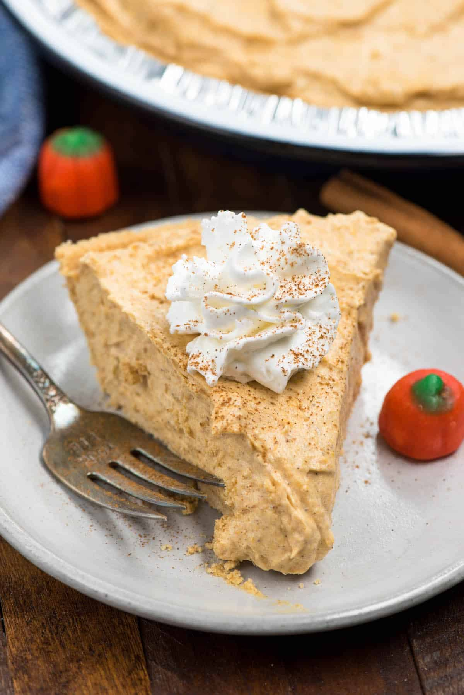

No Bake Pumpkin Pie
Home

Description
We are ramping up for PIE season around Crazy for Crust headquarters (aka my kitchen). I’ve got a TON of new ones to share in the coming months, but today I wanted to start with something EASY.
It’s never too early for pumpkin pie, IMHO. This pumpkin pie is no bake, which is perfect for a few reasons:
- You run out of oven space.
- You don't feel like baking something
- It's still a bajillion degrees outside so turning on your oven seems ridiculous and you WANT PUMPKIN PIE NOW.
This pie is like a pumpkin cream pie; filled with a creamy pumpkin pie mixture with that telltale flavor. It’s all inside a graham cracker crust and topped with whipped cream.
Cream pie is my jam, if you were curious. I can go to town on a cream pie; it’s safer to get them out of my house ASAP or I’ll just eat the entire thing with a fork. Cream pies go down so easy and are so flavorful.
Ingredients
- 1 cup pumpkin puree
- 1 3.4 ounce box instant vanilla pudding
- 1/4 cup milk
- 2 teaspoons pumpkin pie spice
- 8 ounces Cool Whip (1 full 8 ounce container)
- 1 (9-inch) graham cracker crust (store-bought or homemade)
- Whipped Cream for serving
Steps
- Stir together pumpkin puree, pudding mix, milk, and pumpkin pie spice. Stir until no lumps remain.
- Carefully fold in Cool Whip.
- Spread pumpkin mixture in prepared crust. Chill at least 3 hours or until it sets enough to slice. Serve with whipped cream.